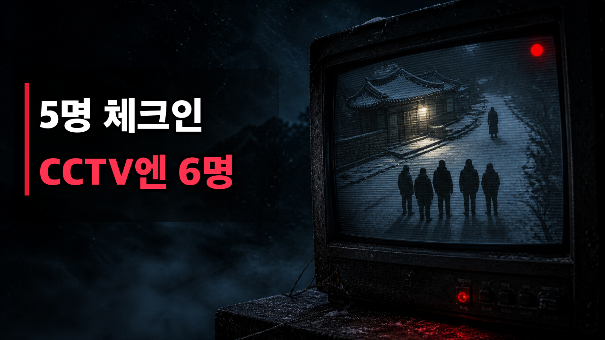
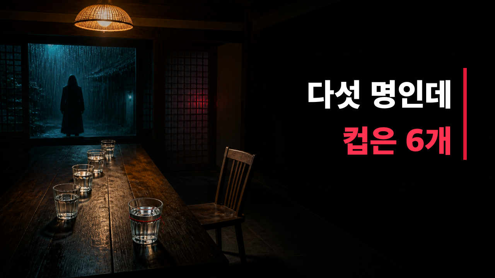

YOUTUBE PUBLISH KIT
여섯 번째 손님
제목부터 SNS 홍보문까지 필요한 내용을 한 화면에서 복사할 수 있습니다.
MAIN TITLE
메인 제목
5명이 체크인했는데 CCTV에는 6명이 찍혔다 | 소름 돋는 펜션 괴담
ALTERNATIVES
추천 제목 5가지
다섯 명이 갔는데 물컵은 여섯 개였다 | 월영재 괴담
여섯 번째 손님은 언제부터 우리와 함께였을까?
CCTV를 확인한 순간, 친구 한 명이 사라졌다
사람 수를 세지 말라는 펜션 주인 | 공포 실화풍 괴담
내 친구들은 나를 기억하지 못했다 | 반전 공포 이야기
DESCRIPTION
설명란 + 타임스탬프
다섯 명이 산속 펜션에 도착했습니다. 그런데 식탁에는 물컵이 여섯 개였고, CCTV에는 차에서 내리는 여섯 번째 사람이 찍혀 있었습니다.
이름은 성호. 문제는 다섯 사람 모두 그를 기억하지만, 누구도 그가 정확히 누구인지 설명하지 못한다는 겁니다. 그리고 펜션 주인은 단 한 가지 경고를 남깁니다.
“현관 카메라는 확인해도 됩니다. 하지만 사람 수는 세지 마세요.”
눈 덮인 산속 한옥 ‘월영재’에서 벌어지는 19분의 창작 공포 오디오 드라마입니다. 이어폰을 착용하고 불을 끈 채 감상해 보세요. 마지막 순간, 처음부터 누가 잘못 들어와 있었는지 드러납니다.
⏱️ 타임스탬프
00:00 CCTV에는 여섯 명이 찍혔다
00:37 길이 사라진 산속
01:29 주인 없는 펜션 월영재
01:55 물컵과 실내화는 여섯 개
02:35 빈 의자와 성호의 이름
03:56 여섯 번째 단체 대화방
04:40 도면에 없는 네 번째 방문
05:31 사람 수를 세지 마세요
06:12 차에서 내린 여섯 번째 사람
07:38 실시간 CCTV 속 식탁
09:02 휴대전화에 생긴 사진
10:11 집이 빈자리를 채우는 방법
12:08 붉은 노끈을 잡고 탈출
13:46 캠코더에 녹음된 목소리
15:00 아무도 나를 기억하지 못했다
16:12 원본 영상이 보여 준 진실
18:08 방 안의 두 번째 물컵
이 영상은 창작된 공포 이야기이며 실제 인물·장소·사건과 관련이 없습니다.
#공포이야기 #괴담 #반전공포 #오디오드라마 #무서운이야기
TAGS
태그
PINNED COMMENT
고정 댓글
여러분은 여섯 번째 손님이 정확히 어느 순간부터 함께 있었다고 생각하시나요? 가장 먼저 이상하다고 느낀 장면의 타임스탬프를 댓글로 남겨 주세요.
THUMBNAILS
썸네일 2종


SOCIAL
SNS 홍보문
PUBLISH TIME
게시 최적화 시간
1순위: 금요일 또는 토요일 오후 9시 (한국 시간)
2순위: 일요일 오후 8시 (한국 시간)
예약 업로드는 공개 1~2시간 전에 처리하고, 공개 직후 30분 동안 댓글에 응답합니다.
FILES
업로드 파일
권장 영상: 2026-010-sixth-guest-youtube-captioned.mp4
클린 영상: 2026-010-sixth-guest-youtube.mp4
별도 자막: captions.srt
영상 사양: 1920×1080 · 60fps · 19분 13초
클린 영상: 2026-010-sixth-guest-youtube.mp4
별도 자막: captions.srt
영상 사양: 1920×1080 · 60fps · 19분 13초